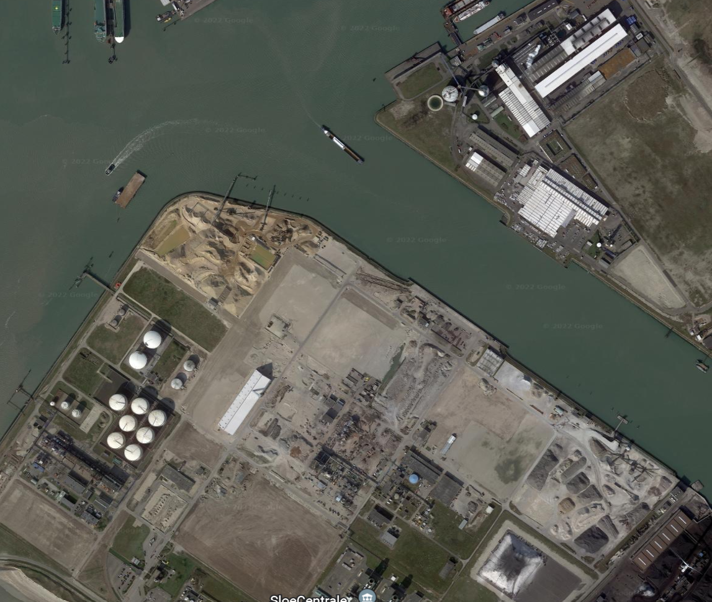

< Terug
Wie Wij Zijn
In een project zijn de belangrijkste factoren de projectleden. Daarom hieronder wat meer over ons persoonlijk.
Stijn van der Male
- Leeftijd: 20
- Woont in: Poortvliet
- Opleiding: HBO Civiele Techniek
- Jaar: 1ste
Mike de Nijs
- Leeftijd: 19
- Woont in: Wouw
- Opleiding: HBO Civiele Techniek
- Jaar: 2de
Jesse Franke
- Leeftijd: 18
- Woont in: Oost-Souburg
- Opleiding: HBO Civiele Techniek
- Jaar: 2de
Thijs de Rechter
- Leeftijd: 17
- Woont in: Schoondijke
- Opleiding: HBO-ICT
- Jaar: 2de
- Richting: Software Engineer